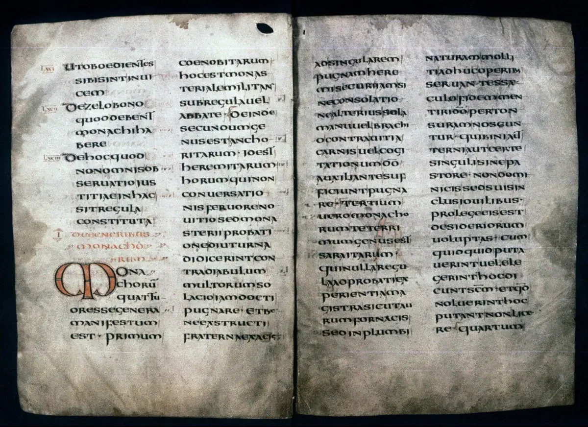
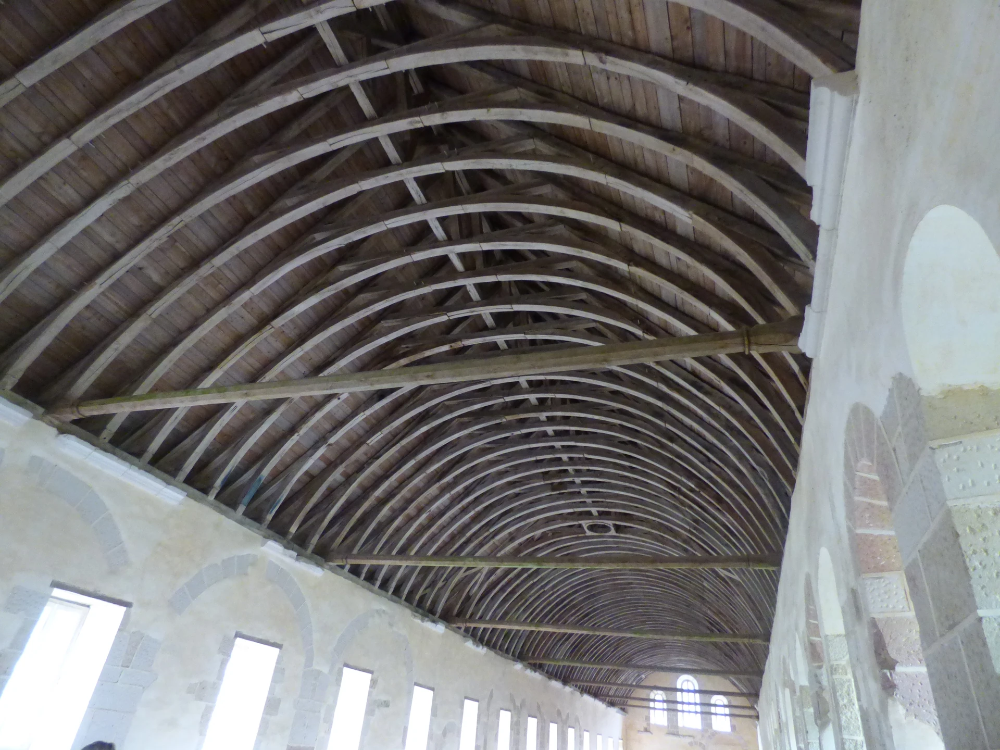
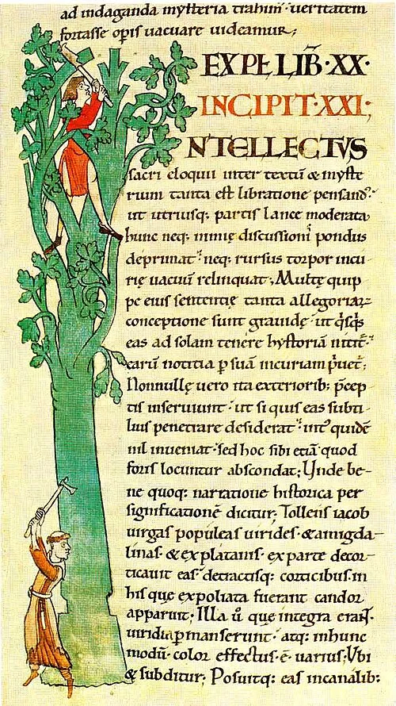

아직 펼치지 않은 카드기도하고 일하는 사람들 · 2‘기도하고 일하라’‘기도하고 일하라’는 수도원을 대표하는 말로 널리 알려져 있어요. 그런데 베네딕도가 쓴 규칙서를 펼치면 이 말이 나올까요?‘기도하고 일하라’는 말, 들어 봤어? 이 말은 어디에 쓰여 있을까?
530년 무렵 · 1880년베네딕도 규칙서 · 수도원의 하루
‘기도하고 일하라’
규칙서에는 ‘기도하고 일하라’라는 말이 없어요. 대신 언제 자고, 언제 일어나고, 신호가 울리면 무엇을 내려놓는지가 꼼꼼히 적혀 있어요. 등불 하나 켜진 한밤의 수도원 숙소를 비추며, 규칙서가 그린 하루로 들어가 보세요.
수도원 사람들은 한밤중에 일어나 기도했대. 깜깜한 방에는 등불이 하나 켜져 있었어. 같이 등불을 들고 비춰 볼까?
검수 전 시안이에요(기준서 1판). 수도원의 하루는 베네딕도 규칙서(8·22·43·48장)를, 표어의 역사는 테렌스 카르동(1995)과 올리버 카프텐(2014)의 글을 따랐어요. 숙소 사진은 베네딕도 규칙을 따르는 시토회 퐁트네 수도원이에요. 상상은 ‘눈 감고 상상해 보기’에만 썼어요.
시안 확인용카드 단계 미리 보기
1
한밤의 숙소
규칙서 8장에 따르면, 겨울에는 밤 여덟째 시간에 일어나요. 자정을 조금 넘겨까지 쉬고 나면 몸이 가뿐해진다는 거예요. 아래 사진의 퐁트네 수도원에서는 밤 기도가 새벽 2시 반쯤에 있었대요.
규칙서 22장은 잠자는 방도 정해 두었어요. 그리고 이렇게 적었어요. ‘숙소에는 아침까지 등불을 켜 둔다.’ 손가락이나 마우스로 문질러, 등불 하나 켜진 숙소를 비춰 보세요.
손가락이나 마우스로 문질러, 등불로 숙소를 비춰 보세요.

프랑스 퐁트네 수도원의 숙소, 2017년. 12세기 시토회 수도원이고, 배를 뒤집은 듯한 참나무 지붕은 15세기에 다시 얹었어요 · 사진: Elliott Brown · CC BY-SA 2.0 · 위키미디어 공용
빛이 닿으면 숨은 표시가 나타나요.
이 방에는 아침까지 등불 하나가 켜져 있었어요. 신호가 울리면 수도사들은 서로 살며시 깨웠어요. 규칙서는 졸린 사람은 핑계를 대기 마련이라고 적었거든요.
퐁트네 수도원은 12세기 시토회 수도원이에요. 시토회 수도사들도 베네딕도 규칙 22장을 따라 옷을 입은 채 잤어요. 그래서 이곳에서 규칙서가 그린 숙소를 오늘도 볼 수 있어요.
수도사들은 이 방에서 교회로 바로 내려가는 계단을 따라 밤 기도에 갔어요. 밤 기도를 마치고 남은 시간에는, 아직 시편과 성경 읽기를 다 익히지 못한 형제들이 공부했대요.
수도원 사람들은 큰 방 하나에서 다 같이 잤어. 밤에도 등불 하나를 켜 두었대.
물어보기한밤중에 일어나야 하면, 졸린 친구를 어떻게 깨워 줄 거야?
2
신호가 울리면
날이 밝으면 일과 기도가 번갈아 와요. 그 사이를 잇는 것은 신호예요. 규칙서 43장은 이렇게 시작해요.

“기도 시간을 알리는 신호가 들리면, 손에 든 것을 모두 내려놓고 서둘러 가되, 점잖게 가십시오. 하느님의 일보다 앞세울 것은 아무것도 없습니다.”
베네딕도 규칙서 43장 · 영어 번역을 이 안내서가 옮김
48장은 ‘게으름은 영혼의 원수’라는 말로 시작해요. 그래서 하루를 손으로 일하는 시간과 거룩한 책을 읽는 시간으로 나눠요.
부활절부터 10월 1일까지의 여름날은 이래요. 아침 첫째 시간부터 넷째 시간 무렵까지 필요한 일을 하고, 여섯째 시간 무렵까지 책을 읽어요. 여섯째 시간 기도와 식사를 마치면 침상에서 조용히 쉬거나, 남을 방해하지 않게 혼자 읽어요. 여덟째 시간 중간쯤 아홉째 시간 기도를 바치고, 저녁 기도 때까지 다시 일해요.
추수를 손수 해야 하는 가난한 곳이라도 서운해하지 말래요. 옛 교부들과 사도들처럼 자기 손으로 일해 먹고 살 때 참 수도자라고요. 몸이 약한 형제에게는 가벼운 일을 맡겨, 놀지도 지치지도 않게 하래요.
종이 울리면 하던 일을 내려놓고 기도하러 갔어. 일하는 시간, 책 읽는 시간, 쉬는 시간도 다 정해져 있었대.
물어보기나무를 베다가 종이 울리면, 도끼를 어디에 내려놓을까?
3
1880년에 나타난 표어
그럼 ‘기도하고 일하라’는 어디서 왔을까요? 미국 베네딕도회 수도자 테렌스 카르동은 1995년 글에서, 이 말은 규칙서 어디에도 없고 19세기 전 베네딕도회 역사에서도 보이지 않는다고 썼어요.
처음 또렷이 보이는 곳은 독일의 대수도원장 마우루스 볼터(1824~1890)가 1880년에 라틴어로 쓴 『수도 생활의 으뜸 원리』예요.
“그러므로 수도자들의 저 오래되고 이름난 표어, 기도하고 일하라.”
마우루스 볼터, 『수도 생활의 으뜸 원리』(1880) · 라틴어를 이 안내서가 옮김
볼터는 하느님의 일(기도)과 손의 일을 ‘두 날개’라고 불렀어요. 하지만 이 말이 어디서 왔는지는 밝히지 않았어요. 베네딕도회 수도자 올리버 카프텐은 2014년 연구에서, 18~19세기 교육 책들에 자주 나오던 ‘기도와 일’이라는 말이 볼터에게 영향을 주었을 거라고 봐요.
카르동은 규칙서의 하루가 사실은 세 갈래라고 말해요. 기도 약 세 시간, 손일 약 다섯 시간, 성경 읽기 두세 시간. 그래서 ‘기도하고, 일하고, 읽어라’에 더 가깝대요.
‘기도하고 일하라’는 1880년에 한 수도원장이 책에 쓰면서 널리 퍼졌대. 규칙서에는 없는 말이야.
물어보기너의 하루에도 ‘두 날개’가 있다면, 무엇과 무엇일까?
눈 감고 상상해 보기
한밤의 숙소예요. 길게 이어진 방 끝에서 등불 하나가 작게 흔들려요. 지붕 위에서 종이 울려요. 옷을 입은 채 누워 있던 수도사들이 하나둘 일어나 띠를 고쳐 매요. 옆자리 젊은 형제가 꼼짝하지 않자, 나이 든 형제가 어깨를 살며시 두드려요. 발소리를 죽이고 계단을 내려가면, 어두운 교회에서 첫 시편이 시작돼요.
눈을 감아 봐. 깜깜한 큰 방에 등불 하나가 반짝여. 종이 울리면 다들 살금살금 일어나. 졸린 친구 어깨를 톡톡 두드려 깨워 줘.
나의 자리
나의 하루에서 기도(쉼)와 일과 배움은 어떻게 나뉘어 있나요? 한 가지가 너무 많거나 모자라지는 않나요?
오늘 하루, 노는 시간·공부 시간·쉬는 시간은 얼마나 됐어?
마음에 닿는 한 줄을 고르거나 직접 써 보세요. 한 줄을 남기면 이 자리의 도장이 찍혀요. 이 기기에만 저장돼요.
더 깊이
궁금한 칸만 펼쳐 읽어도 괜찮아요.
알고 보면
칼은 풀고 자요 규칙서 22장은 잠잘 때 허리에 칼을 차지 말라고 해요. 꿈결에 다칠 수 있어서래요. 옷과 띠는 그대로 두어, 신호가 울리면 곧바로 일어나요.
늦게 온 사람의 자리 43장은 밤 기도에 늦은 사람은 맨 끝이나 따로 마련한 자리에 서게 해요. 모두가 보는 앞에서 부끄러움을 느껴 고치라는 뜻이에요.
방이 따로 생긴 때 퐁트네 수도원은 중세 끝 무렵에야 수도사마다 작은 방을 만들었어요. 그 전에는 모두 이 긴 방 하나에서 잤어요.
낮잠도 규칙 여름날 여섯째 시간 기도와 식사를 마치면, 침상에서 조용히 쉬어도 돼요. 책을 읽고 싶은 사람은 남을 방해하지 않게 혼자 읽어요.
함께 보면 좋은 카드 규칙서를 처음 쓴 몬테카시노 수도원, 손일로 만든 물건에 수도원의 이름을 거는 트라피스트 수도원 이야기도 이 세트에 있어요.
기록마다 다른 점
밤 기도 시간 규칙서 8장은 겨울에 ‘밤 여덟째 시간’에 일어나, 자정을 조금 넘겨까지 쉬라고 해요. 시계 시각으로는 적혀 있지 않아요. 퐁트네 수도원 누리집은 그곳의 밤 기도를 새벽 2시 반쯤이라고 소개해요.
더 찾아보기
규칙서는 73장으로 짧아서, 영어 번역으로 한 장씩 읽기 좋아요. 아래에서 이 카드에 나온 장을 바로 읽을 수 있어요.
등불로 비춘 숙소 금박
숙소를 비춰 숨은 세 곳을 모두 찾으면 금박이 입혀져요.
숙소를 비춰 숨은 세 곳 모두 찾기
규칙서의 하루를 끝까지 채색
아이와 함께 끝까지 보면 카드가 채색돼요.
아이와 함께 ‘영화처럼 보기’를 끝까지 보기
근거 보기 (9)
- 베네딕도 규칙서 8장(CCEL) — 겨울에는 밤 여덟째 시간에 일어남, 자정을 조금 넘겨까지 쉼, 밤 기도 뒤 남은 시간에는 시편과 읽기를 공부
- 베네딕도 규칙서 22장(CCEL) — 따로 침상, 할 수 있으면 한곳에서, 열 명·스무 명씩 어른과, 아침까지 등불, 옷과 띠를 그대로, 칼은 풀기, 신호가 울리면 일어남, 젊은이는 어른들 사이에, 졸린 사람의 핑계 때문에 서로 살며시 격려
- 베네딕도 규칙서 43장(CCEL) — 기도 시간 신호가 들리면 손에 든 것을 모두 내려놓고 서둘러 가되 점잖게, 하느님의 일보다 앞세울 것은 없음, 늦은 사람은 맨 끝이나 따로 마련한 자리
- 베네딕도 규칙서 48장(CCEL) — 게으름은 영혼의 원수, 손일과 거룩한 읽기, 여름날 시간표, 손으로 일해 먹고 살 때 참 수도자, 약한 형제에게 가벼운 일
- 퐁트네 수도원 누리집 「숙소」 — 15세기 참나무 지붕(배를 뒤집은 모양), 처음 지붕은 불에 탐, 지붕 위 작은 종탑, 옷을 입은 채 사이를 띄운 긴 의자에서 잠, 중세 끝 무렵 작은 방, 교회로 가는 계단, 밤 기도 새벽 2시 반쯤
- 테렌스 카르동, 「일이 곧 기도? 아니에요!」(어섬션 수도원 소식지, 1995년 10월) — 규칙서 어디에도 없음, 19세기 전 베네딕도회 역사에 없음, 마우루스 볼터의 책에서 나옴, 기도 약 3시간·손일 약 5시간·성경 읽기 2~3시간
- 스티브 페리쇼, 「기도하고 일하라: 베네딕도회 표어가 아니다」(2024) — 올리버 카프텐의 2014년 논문(Erbe und Auftrag 90) 소개, 볼터(1824~1890)의 1880년 『수도 생활의 으뜸 원리』, ‘Hinc vetus clarissimaque illa monachorum tessera: Ora et labora’, 두 날개, 출처를 밝히지 않음, 18~19세기 교육 책의 영향
- 디지털 인문학 연구소(셰필드 대학), 「파운틴스 수도원 숙소」 — 베네딕도 규칙 22장에 따라 수도사들이 옷을 입은 채 잠, 짚을 채운 매트리스, 밤 기도 종이 울리면 옷 입을 시간 없이 일어남
- 위키미디어 공용 파일 설명(API로 확인): 퐁트네 수도원 숙소 사진(2017) · 시토 수도원 필사실이 1111년에 마친 『욥기 풀이』 사본(디종 시립도서관 Ms. 173) 41쪽
그림·사진·소리 출처
‘처음 만나는 기독교 문화’의 깊은 카드예요. 카드 단계와 남긴 글은 이 기기에만 저장돼요.